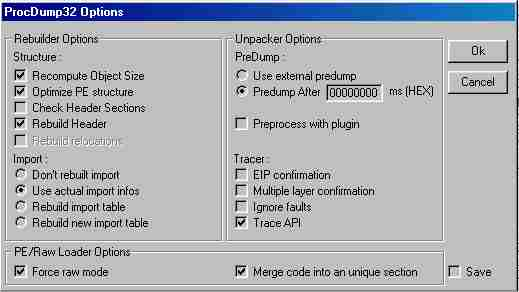
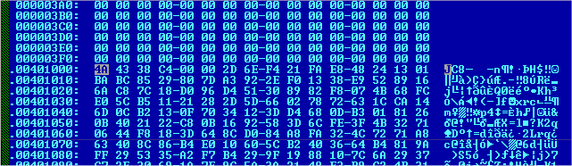
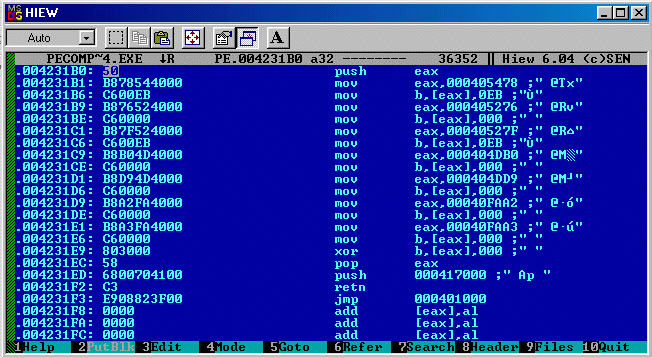
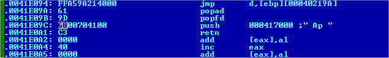
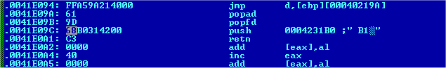

Les fichiers compactés : (suite et fin, pour l'instant...)
Résumé :
Le cours dernier nous avons vue comment utiliser les outils de bases et avont commencer à deplomber PE-Compact 1.40b1 ensemble, des nouvelles versions de ce progs sont sorti mais ce n'est q'un exemple, du plus il est inclus avec ce numéro de MemenTo ici.
Rappel sur ProcDump:
ProcDump est un programme qui affiche la liste des processus en mémoire et qui peut les sauvegardés. Il est possible aussi de les manipuler pour toutes sortes d'operations.
Suite du tutoriel :
Voilà, nous savons maintenant enlever un string de base, ici c'etait "Unregistered!". Maintenant nous allons attaquer les API. Les applications font appels à des fonctions API pour réaliser des tâches, comme créer, détruire des fenêtres, etc... ; accéder aux services du système, tel que l'affichage, clavier, souris, les messages entre Windows et les applications et beaucoup d'autres fonctions. Les fonctions API se trouvent dans différents fichiers, le plus souvent dans les Dynamic Link Libraries (DLL). Ici on va voir des API simple a choper.
Pour ce faire on va utiliser SoftIce (ok, tant pis pour ceux qui sont sous WinMe (pourri) et NT c'est pas trop fait pour craquer) et on va poser un point d'arret sur GetLocalTime, de cette façon on va cibler la limite de temps quand à la compression d'un fichier puisque le prog fait appel à l'horloge windows (avencer et reculer l'horloge d'un ans pour voir ;).
Un fois ce point posé on demarre le prog et on clique sur Compress. Là Sice va stopper sur l'API que l'on a bloquer et nouc renvoyer à ce code lorsque l'on appuis sur F12 pour passer le Kernel.
:0040526C 66813D83A24000D007 cmp word ptr [0040A283], 07D0 :00405275 750A jne 00405281 :00405277 66833D85A2400007 cmp word ptr [0040A285], 0007 :0040527F 761C jbe 0040529D :00405281 6A10 push 00000010 :00405283 6808B24000 push 0040B208 :00405288 6878A94000 push 0040A978 :0040528D FF351CB94000 push dword ptr [0040B91C] :00405293 E8ECF0FFFF call 00404384 :00405298 E9B3010000 jmp 00405450
Pour mieux faire le rapprochement on va ouvrir WinDasm et lancer une recherche sur 0040526C, là on va tomber ici :
:0040526C 66813D83A24000D007 cmp word ptr [0040A283], 07D0 :00405275 750A jne 00405281 << Saute en pleins sur le push 0040B208 :00405277 66833D85A2400007 cmp word ptr [0040A285], 0007 :0040527F 761C jbe 0040529D << Saute par dessus la boite de message * Referenced by a (U)nconditional or (C)onditional Jump at Address: |:00405275(C) | :00405281 6A10 push 00000010 << Boite de limitation de temps * Possible StringData Ref from Code Obj ->"PECompact v1.40b1, " | :00405283 6808B24000 push 0040B208 * Possible StringData Ref from Code Obj ->"This unregistered version of PECompact " ->"has expired! Please see the about " ->"box for places to obtain a new " ->"version." | :00405288 6878A94000 push 0040A978 :0040528D FF351CB94000 push dword ptr [0040B91C] :00405293 E8ECF0FFFF call 00404384 :00405298 E9B3010000 jmp 00405450 << Fin de la boite et suite du programme...
* Referenced by a (U)nconditional or (C)onditional Jump at Address: |:0040527F(C) | :0040529D 833DA1B9400001 cmp dword ptr [0040B9A1], 00000001 :004052A4 0F84A6010000 je 00405450 :004052AA 68FF000000 push 000000FF :004052AF 6832B44000 push 0040B432 :004052B4 684C040000 push 0000044C :004052B9 FF351CB94000 push dword ptr [0040B91C] :004052BF E85B280000 call 00407B1F
Ce qui est dejà plus lisible pour
un début. Là vous l'aurez bien vue, il faut faire sauter le 750A jne 00405281 pour que le prog passe par 761C jbe 0040529D et saute la limite de temps. On va donc
rajouter une petite ligne dans le script de Rpp, voici la ligne :
p=0405275/75,0a/75,00: .
Nous allons replacer 750A par 7500 ce qui reviens au même que de
le nopper puisqu'il ne va sauter nulpart! :)
Maintenant on va s'occuper du nag qui viens alléatoirement. Il faut savoir que ce genre de nag fait appel la plupart du temps à une base de temps pour s'identifier à la fenêtre sur le retour d'un entier(c'est de la prog). On va donc poser un bpx SetTimer sous Sice pour bloquer le prog pour voir si il fait appel à une telle fonction. On le lance et hop! c'est le cas (bon, c'etait un peu fait expret ;p), le prog va affichier un nag et dès qu'on le quitte il fait appel à SetTimer à la ligne 405498. Comme cette API utilise un rtour d'information la source du probleme à de grande chance de se trouver un peu plus haut. Voici le listing d'enssemble :
* Referenced by a (U)nconditional or (C)onditional Jump at Address: |:00404E8C(C) | :0040546F E8F5240000 call 00407969 :00405474 33D2 xor edx, edx :00405476 D1E9 shr ecx, 1 :00405478 720D jb 00405487 << Devinez à quoi il sert ;) :0040547A 68429C0000 push 00009C42 :0040547F FF7508 push [ebp+08] :00405482 E8F70D0000 call 0040627E << Appel la fenêtre About, erk... :00405487 6A00 push 00000000 :00405489 68F4010000 push 000001F4 :0040548E 6A00 push 00000000 :00405490 FF7508 push [ebp+08] :00405493 E80F260000 call 00407AA7 :00405498 6880000000 push 00000080 << Sice bloque ici (bpx SetTimer) :0040549D FF3518B94000 push dword ptr [0040B918] :004054A3 E847260000 call 00407AEF :004054A8 50 push eax :004054A9 50 push eax :004054AA 6A00 push 00000000 :004054AC 6880000000 push 00000080 :004054B1 FF351CB94000 push dword ptr [0040B91C] :004054B7 E809260000 call 00407AC5 :004054BC 58
Ici pas de probleme, il faut juste remplacer 720D par EB0D. Pour ce faire fates comme d'habitude avec le script ajouter une ligne, dans ce cas c'est celle-ci : p=0405478/72,0d/eb,0d:
Et voilà! Le prog est déplombé
mais on va paufiner la chose. Deja pour virrer la phrase
"Licensed for 14-days..." qui se trouve dans About il
faut s'y prendre de la même façon que pour le
"Unregistered" (cours MemenTo 3).
Mais ce n'est pas tout, maintenant pour que tout soit clean il
faut retirrer le "PLEASE REGISTER!" qui clignote en
gros et qu iest du plus mauvais effet.
Pour cela, rappellez-vous du fameux 00 qu'il fallait mettre dans
certains cas pour supprimmer une phrase, et bien là c'est le
même principe à peu de chose près que cette phrase clignote,
et c'est justement ça qui va nous aider à la reperrée. Sous
ProcDump faittent un dump complet (Dump Full) en ayant activer
l'option header au prealable dans le panneau d'options (sisi je
vous assures!):
 image crade mais bon, c'est lisible!
Puis dumpez tout ça et ouvrez l'exe sous WinDasm. Bon ok il n'y à rien mais en traient sur le listing comme une épave on peut tomber là dessus :
:0040FA82 800050 add byte ptr [eax], 50 :0040FA85 007200 add byte ptr [edx+00], dh :0040FA88 6F outsd :0040FA89 006700 add byte ptr [edi+00], ah << +00, ok pas de pbs :0040FA8C 7200 jb 0040FA8E * Referenced by a (U)nconditional or (C)onditional Jump at Address: |:0040FA8C(C) | :0040FA8E 65007300 add byte ptr gs:[ebx+00], dh << encore +00... :0040FA92 7300 jnb 0040FA94 * Referenced by a (U)nconditional or (C)onditional Jump at Address: |:0040FA92(C) | :0040FA94 00000000000000000000 BYTE 10 DUP(0) :0040FA9E 00000000 BYTE 4 DUP(0) :0040FAA2 025009 add dl, byte ptr [eax+09] << Belle addition ;) :0040FAA5 005200 add byte ptr [edx+00], dl :0040FAA8 7400 je 0040FAAA * Referenced by a (U)nconditional or (C)onditional Jump at Address: |:0040FAA8(C) | :0040FAAA 0A00 or al, byte ptr [eax] :0040FAAC 620400 bound eax, dword ptr [eax+eax] :0040FAAF 00FF add bh, bh :0040FAB1 FF820050004C inc dword ptr [edx+4C005000] :0040FAB7 004500 add byte ptr [ebp+00], al :0040FABA 41 inc ecx :0040FABB 005300 add byte ptr [ebx+00], dl :0040FABE 45 inc ebp :0040FABF 0020 add byte ptr [eax], ah :0040FAC1 005200 add byte ptr [edx+00], dl :0040FAC4 45 inc ebp :0040FAC5 004700 add byte ptr [edi+00], al :0040FAC8 49 dec ecx :0040FAC9 005300 add byte ptr [ebx+00], dl :0040FACC 54 push esp :0040FACD 004500 add byte ptr [ebp+00], al :0040FAD0 52 push edx :0040FAD1 0021 add byte ptr [ecx], ah :0040FAD3 00000000000000000000 BYTE 10 DUP(0) :0040FADD 000000 BYTE 3 DUP(0)
Ce code se base sur le même principe que la gestion d'un curseur de boite de texte. On peut voir ce le curseur est synchroniser en 1/2 par rapport au label "PLEASE REGISTER!". La ligne 025009 add dl, byte ptr [eax+09] est interressent puisqu'elle va reactiver à chaque fois cette opperation (le clignotement). En mettant le resulta à 00 rien ne pourra suivre à ce niveau là dans le cose et l'on va l'annuler.
Pour ce faire il faut ajouter cette ligne dans le script : p=40faa2/02,50,09/00,00,09:
Le script donnera au final :
O=Pe140bcrk.exe:
F=PECompact.exe:
p=0405478/72,0d/eb,0d:
p=0405275/75,0a/75,00:
p=404dd7/68,34,04,00,00/68,34,00,00,00:
p=40faa2/02,50,09/00,00,09:
$
Voilà, ce coup-ci le prog est
completement deplombé mais il reste un lourd probleme...
Comme je l'ai deja dis, les loaders ne sont pas fiables à 100%
mais plutot à 80%. Les 20% restant peuvent rendres votre machine
instable, etc...
C'est pour ça que l'on va voir comment patcher directement le
prog, mon etape preferee =)
Si Hiew n'existait pas il faudrait l'inventer!!
Et oui, nous allons une fois de plus utiliser mon prog prefere, Hiew 6.x :)
Alors voilà, pour patcher un prog compacter il exsite plusieurs façons mais celle que je pratique (la plus sure) est d'inscire son code asm à la fin d'un fichier et de resauter sur son point d'entrer pour le rendre actif. Et oui car comme les progs compactés se décompactes entierement en mémoire, il y à forcement un retour d'instruction sur le point d'entrée quand le decompactage se termine et que le prog fait sin premier démarrage. Là on attaque la prog en asm.
Deja pour incorporrer son code asm il faut un registre, prenons eax. Ensuite il faut le pousser, etc.. l'algorythme de base est :
Pousse eax
Deplace l'addresse cible dans eax
Deplace le nouvel octet dans eax
On met le eax à 0
On vide eax
On indique le point de passage de notre code
On recupere les données
On saute sur l'entrée du fichier pour les appliquées
En assembleur ça donne :
push eax
mov eax xxxxxx
mov eax xx
xor eax
pop eax
push xxxxxx
ret
jmp point d'entrée du programme
Pour le point d'entrée il suffit juste de ce placer comme ca :

Et de recuperrer l'addresse d'entrée qui est ici 00401000.
Voilà, alors comme c'est (peut être) le primer prog que vos patchez de la sorte de vais me passer de commentaire et vous filer un screenshot, ça serat plus explicite (octet a placer à la fin d'un fichier, là où se trouve pas mal de 000000... qui ne servent à rien) :

Maintenant c'est bon, vous pouvez
executer le programme. Alors, qu'est ce qui se passe? Rien du
tout! :)
Et oui, nous avons mis notre code mais nous n'avaos pas fait en
sorte que le programme en tienne compte, ici le push 417000.
Alors, reprennons notre fichier
"header" que nous avons fait avec ProcDump et
redesassemblons-le avec Windasm. Maintenant on va chercher
l'occurence LoadLibraryA; cette API sert à plusieurs chose mais
principalement ici a créer un processus de l'image du fichier
exe en memoire, cette fonction peut aussi se retrouver dans une
dll.
Une fois trouvé il faut chercher le push qui se trouve juste au
dessus car ce push correspond à l'entrée du programme
(verifiable sous Sice > 004231B0 ENTER). Le principe est donc
tout simple, on chope ce passage pour l'orrienter vers notre
patch et on retourne sur l'entrée du fichier ce qui reviens
exactement au même en deffinitive. Voilà donc la modif' à
faire :

En

car c'est à l'addresse 4231B0 qui se trouve notre code, et rappellez vous, le saut qu'y sy trouve à la fin va sauter sur l'entée du programme.
Maintenant redemarrez PeCompact 1.40 b1 et voilà! Le tour est joué, out à été fait pour contourner la limitation dans le temps, les nags et autres :)
A present vous êtes prêt pour
vous lancer dans le patchage de fichiers compressés (évitez
quand même ceux qui sont cryptés dans un premier temps).
Je rappel aussi qu'un tutoriel est le reçis d'une experience, il
ne doit pas favoriser certaines pratiques (je suis mal placé
pour dire ca mais c'est surtout le coté asm qui me plait).
Ah oui je rappel que ce n'est qu'un exemple et que d'autres programmes n'auront pas la même protection mais le principe d'approche reste casiment identique.